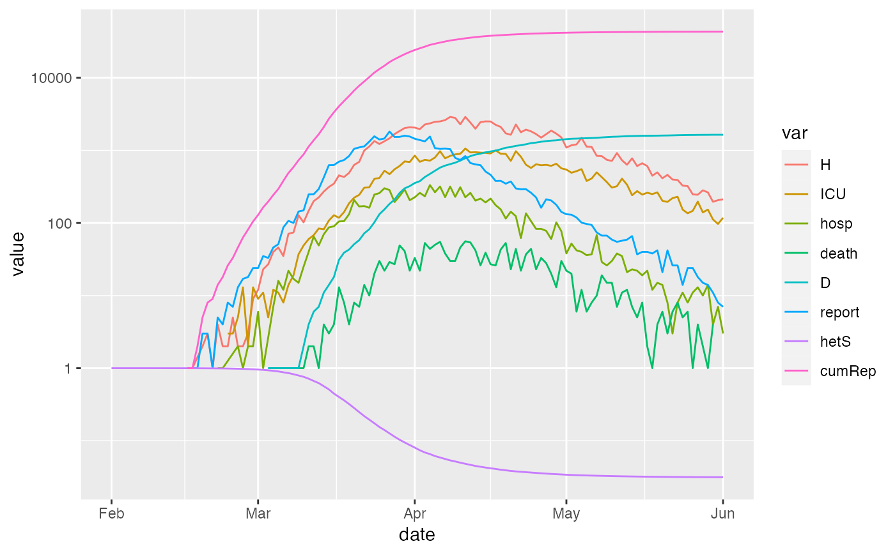

Run pandemic simulation
run_sim( params, state = NULL, start_date = "2020-03-20", end_date = "2020-05-1", params_timevar = NULL, dt = 1, ndt = 1, stoch = c(obs = FALSE, proc = FALSE), stoch_start = NULL, ratemat_args = NULL, step_args = list(), ode_args = list(), use_ode = FALSE, condense = TRUE, condense_args = NULL, verbose = FALSE )
| params | named vector of parameters |
|---|---|
| state | named vector of states |
| start_date | starting date (Date or character, any sensible D-M-Y format) |
| end_date | ending date (ditto) |
| params_timevar | three-column data frame containing columns 'Date'; 'Symbol' (parameter name/symbol); 'Relative_value' (value relative to baseline) |
| dt | time step for |
| ndt | number of internal time steps per time step |
| stoch | a logical vector with elements "obs" (add obs error?) and "proc" (add process noise?) |
| stoch_start | dates on which to enable stochasticity (vector of dates with names 'proc' and 'obs') |
| ratemat_args | additional arguments to pass to |
| step_args | additional arguments to pass to |
| ode_args | additional arguments to |
| use_ode | integrate via ODE rather than discrete step? |
| condense | if |
| condense_args | arguments to pass to |
| verbose | print messages (e.g. about time-varying parameters)? |
params <- read_params("ICU1.csv") paramsS <- update(params,c(proc_disp=0.1,obs_disp=100)) paramsSz <- update(paramsS, zeta=5) state <- make_state(params=params) time_pars <- data.frame(Date=c("2020-03-20","2020-03-25"), Symbol=c("beta0","beta0"), Relative_value=c(0.7,0.1), stringsAsFactors=FALSE) res1 <- run_sim(params,state,start_date="2020-02-01",end_date="2020-06-01") res1X <- run_sim(params,state,start_date="2020-02-01",end_date="2020-06-01", condense_args=list(keep_all=TRUE)) res1_S <- update(res1, params=paramsS, stoch=c(obs=TRUE, proc=TRUE)) res1_t <- update(res1, params_timevar=time_pars)#> Warning: End of run_sim_range check: One or more state variables is negative, below -sqrt(.Machine$double.eps) #> Check following message for details #> S E Ia Ip Im #> 301664.004533 211.183017 258.457546 -972.752127 1533.669697 #> Is H H2 ICUs ICUd #> 62.457880 103.820520 47.912754 146.032969 7.902778 #> D R X #> 2447.130708 694490.179727 15548.545408 #> attr(,"class") #> [1] "state_pansim"res1_S_t <- update(res1_S, params_timevar=time_pars) res2_S_t <- update(res1_S_t,params=update(paramsS, proc_disp=0.5)) res3_S_t <- update(res2_S_t,stoch_start="2020-04-01") res3_Sz <- update(res1_S, params=paramsSz) plot(res3_Sz,log=TRUE,log_lwr=1e-4)